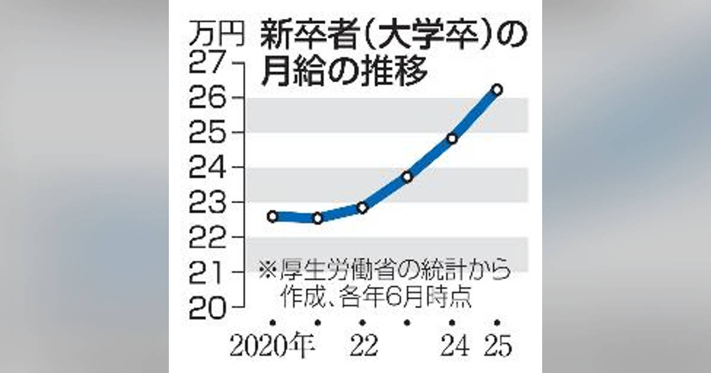
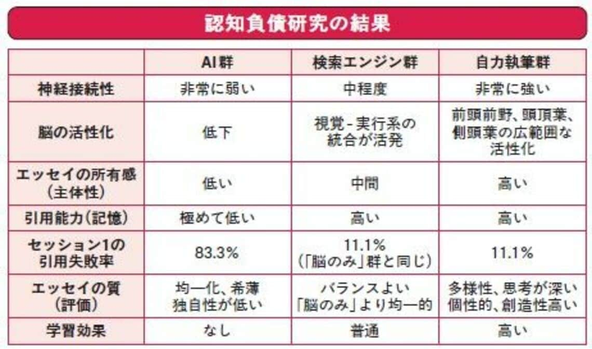
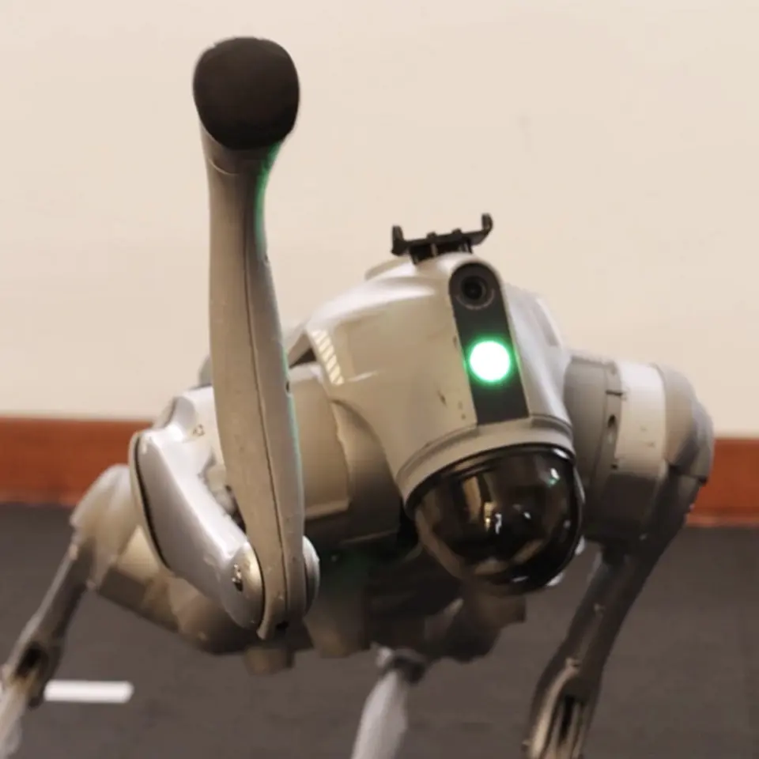
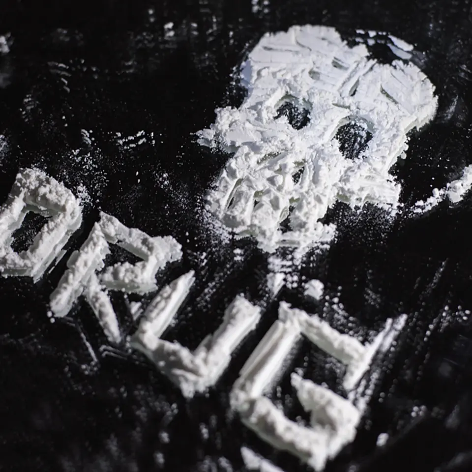

01
【急増】「倒産」を学ぶと、ファイナンスが丸分かりになる
公開日時：2026年8月29日 05:30 JST
あなたに関係ありそうな理由
取引先や投資先を見るとき、損益の数字だけでなく、現金がいつ入り、返済がどこに現れるかを読む基礎になるためです。
概要
この記事は、増えている倒産のニュースを、会社の財務を読む入口として整理する。人手不足や原材料高を背景に倒産が増え、脱毛サロンのミュゼプラチナムや決済代行の全東信などの事例が挙げられるが、倒産は単に赤字になった状態を指す言葉ではない。記事がまず置くのは、期限までに債務を返せない「支払い不能」が核だという点だ。会計上の損失や債務超過だけで直ちに倒産とは決まらない一方、資金繰りが続かなければ事業は止まる。対応にも、債権者と話し合って返済条件を変える私的整理と、民事再生や破産など裁判所を使う法的整理がある。民事再生では、例えば10億円の債務を1億円程度まで圧縮して営業を続ける道があり、日本航空やSBI新生銀行の再建、レナウンの事業承継も、会社そのものを即座に消すだけではない選択肢を示す例として紹介される。財務分析では成長性、収益性、生産性、安全性の四つを見るが、安全性は貸借対照表だけでは足りない。流動比率は150〜200％が一つの目安とされるものの、借入金の元本返済は損益計算書ではなく財務キャッシュフローに出る。売上があっても、売掛金の回収より支払いが先なら現金は減る。記事はスターバックスの流動比率が100％未満でも、ギフトカードの未使用残高が先に現金として入り、売掛金の回収日数がマイナスになる仕組みを例に、業種ごとの資金循環を見る必要を説く。表示コメントでも、損益表だけで判断せず、支払順序、回収条件、事業モデルを合わせて確認すべきだという論点が出た。建設業のように受注から入金までが長く、外注費や材料費が先に出る業種では、同じ売上規模でも危険度は異なる。取引先への与信を考える場合も、利益率に加え、売掛金や在庫が膨らんでいないか、短期借入の更新に依存していないかを確認すると、資金の詰まりを早く探れる。資金繰り表で数カ月先まで入出金を見通せるかは、経営者だけでなく、融資や大口取引を判断する側にも有効な確認点になる。必要資金を日付で見る癖が、早期の対応と選択肢の確保につながる。倒産を読むときは見出しの件数だけでなく、誰にいつ払う約束があり、現金を生む仕組みが持続しているかまで追いたい。
仕事や会話で使える一言
「黒字かどうかだけでなく、現金が入る順番と返済のタイミングを見ると、会社の安全性はずっと具体的に読めます。」
NewsPicks原文を読む
02
初任給、月１００万円で人材獲得 能力重視、霞ケ関キャピタル
公開日時：2026年8月29日 14:15 JST

あなたに関係ありそうな理由
一律の初任給ではなく、入社時点で市場価値が証明できる人材へどう報いるかという、採用と既存組織の設計の問題だからです。
概要
霞ケ関キャピタルが2027年4月入社の新卒採用で、選抜した人材の月額給与を100万円にする方針を決めたという記事だ。対象は「世代のトップ」とみなす人材で、スタートアップでの実績やAIの能力などを持つ学生を想定する。応募は約1300人に上り、内定は約10人。選考では、自分がナンバーワンだと考える領域を発表してもらい、起業経験者やAI開発者も内定者に含まれるという。月100万円なら年額はおよそ1400万円で、2025年6月時点の大卒初任給の全国平均26万2300円の約4倍に当たる。2020年から平均が16％上がったという賃金上昇を踏まえても、国内の新卒水準としてかなり高い。記事は同社の既存社員の平均年収が約1700万円であることにも触れ、若手の入社時点の給与が既存の若手を上回る可能性を示す。ここで重要なのは、単なる景気の良い採用広報として数字を見るか、役割と能力への報酬を年齢や勤続年数から切り離す試みとして見るかだ。もちろん、初任給を高く掲げれば採用が成功するわけではない。内定者に実際にどの仕事を任せ、成果をどう評価し、既存社員との納得感をどう保つかが続かなければ制度は機能しない。表示コメントでも、1300人の応募から約10人という倍率は会社の発信力として働く一方、年齢や新卒一律という慣行より、再現性のある技能を報いる方向への転換を示すとの見方があった。実力重視を掲げるなら、評価の透明性も同時に必要になる。どんな実績を「世代のトップ」と判定するかが曖昧なら、採用時の話題性が社内の不公平感に変わりやすい。反対に、入社年次にかかわらず専門性を育て、報酬を見直せる仕組みがあれば、採用した一部の人だけの制度には終わらない。会社にとっては、採用後の配置や育成までを含めた投資の回収計画も問われる。事業の伸びと採用投資のつながりが、次に問われる。選考の再現性も、長期的な信頼に直結する。高い報酬は人材獲得の手段であると同時に、組織が何を価値と認めるかの宣言でもある。採用市場を読む際は最高額の見出しだけでなく、対象人数、評価基準、入社後の処遇、事業がその人材価値を回収できる構造まで確かめたい。
仕事や会話で使える一言
「高い初任給は採用施策である以上に、組織がどんな能力に値段を付けるかという宣言です。」
NewsPicks原文を読む
03
AIを使いすぎると｢バカになる｣は真実 MITが証明した､1カ月後も消えない"脳の認知負債"の恐怖
公開日時：2026年8月29日 09:30 JST

あなたに関係ありそうな理由
生成AIを使う業務で、出力の速さと、自分で説明・評価する力をどう両立させるかを考える材料になるためです。
概要
この記事は、生成AIに文章作成を任せる使い方が、利用者の思考にどんな影響を与え得るかを、MITの研究として紹介する。参加者54人を、ChatGPTを使う群、検索エンジンを使う群、道具を使わない群に分け、エッセー作成中の脳波などを追ったという。記事は、AI群では脳内ネットワークの結び付きが弱く、文章への主体的な関与や内容の記憶が薄れたとする結果を「認知負債」と呼ぶ。1カ月後にAIを使わず書いた場合にも、その影響が完全には戻らないという紹介は、便利な道具に任せるほど自分で考える訓練が減るのではないかという不安に直結する。さらに、AIの回答をそのまま採用する利用者ほど、文章の根拠や構成を自分の言葉で説明しにくくなるという問題意識が置かれる。一方で、この記事の強い見出しを結論として受け取るのは早い。表示コメントには、これは査読済み論文ではなく予備的な研究報告であり、参加者数や実験条件は限られること、特定のエッセー課題での脳波から一般的な知能低下や脳の損傷を断定できないことが指摘された。研究の著者自身も、AIで人が「ばかになる」ことを示したいわけではないという趣旨を述べているとされる。したがって、この記事はAIを使うなという結論より、使う順番を設計する問題として読むのが実用的だ。まず自分の仮説や論点を置き、AIには反論、情報整理、表現の改善を頼み、最後に根拠と文脈を自分で確認する。一方で、AIが作業手順を示すことで初心者が早く学べる場面もある。どの工程なら任せられ、どの工程では人が理解を示すべきかを、職種ごとに分けて設計する必要がある。短い時間でも自力で下書きする機会を残せば、判断の筋肉を保ちやすい。個人任せにせず、レビュー例を共有し、利用の質を組織でそろえることも有効だ。運用の定期点検も欠かせない。組織では、出力を読んで説明できる人を残し、レビューの責任を曖昧にしないことも必要になる。AIは認知を代替するだけの装置ではなく、思考を外に出して検証する相手にもなり得る。記事とコメントを合わせると、警戒すべきは利用時間の長さそのものではなく、判断と説明を丸ごと委ねる使い方だと整理できる。
仕事や会話で使える一言
「AIの答えを採る前に、自分なら何を根拠に判断するかを言える状態を残しておくことが大切です。」
NewsPicks原文を読む
04
AIの次なる飛躍、文字から「現実世界」へ
公開日時：2026年8月29日 05:20 JST

あなたに関係ありそうな理由
生成AIが文章生成から、ロボットや機械の行動へ広がるときに、導入効果と安全性を分けて見る視点が必要になるためです。
概要
この記事は、次のAI競争が文章や画像を扱う大規模言語モデルから、物理空間で動く「ワールドモデル」へ移り始めているという見取り図を示す。言語モデルが膨大なテキストから単語のつながりを学ぶのに対し、ワールドモデルは動画、ゲーム、シミュレーションなどを通じ、ある行動をすると周囲がどう変わるかを学ぶ。狙いは、ロボット、車両、ドローンが三次元空間で目的に向かって動けるようにすることだ。記事が紹介するGeneral Intuitionは、ゲーム映像共有サービスMedal.tvが持つ数百万時間分のデータを出発点にする。同社のモデルは、現在位置、機体の形、目標を与えると、ロボット犬などを動かすための制御を短時間で調整できるという。ただし、現段階で扱えるのは四脚ロボット、車両、ドローンなどで、汎用的な人型ロボットが家庭で自在に作業する段階とは隔たりがある。投資家はこの分野を初期のGPT-2にたとえ、同社の資金調達は60億ドル超の評価額を想定するとされる。EmulateやWorld Labs、AMI Labsなども同じ方向を探り、実世界で学習させる基盤への期待は強い。一方、実用化の壁は大きい。三次元の情報を効率よく表現する方法、リアルタイムでの計算速度、そして誤った判断をしたときの安全性がある。文章なら多少不自然な出力でもやり直せるが、ロボットが物を落としたり、人に近づき過ぎたりする誤りは許容しにくい。ゲームから得たデータが現場と同じ条件で通用するかも別問題だ。照明、摩擦、障害物、人の動きが変われば、訓練時の成功がそのまま再現されるとは限らない。実証では成功率だけでなく、どんな失敗が起き、復旧にどれだけ時間がかかったかを測って初めて比較できる。記事は言語モデルに高水準の指示を出させ、ワールドモデルに具体的な動作を担わせる組み合わせにも触れる。表示コメントでも、言葉を理解するAIから世界を認識して行動するAIへ軸が移るという期待と、実際の環境で速度と安全を両立できるかを見極める必要があるという論点があった。導入を考える側は、派手なデモより、対象作業、失敗時の止め方、監督者、学習データの範囲を具体的に確かめるべきだ。
仕事や会話で使える一言
「現実世界で動くAIは、賢い判断だけでなく、間違えたときに安全に止まれる設計まで含めて初めて使えます。」
NewsPicks原文を読む
05
【皮肉】ハンバーガーよりクスリの方が安い国
公開日時：2026年8月29日 05:30 JST

あなたに関係ありそうな理由
技術や物流で供給コストが下がると、危険な商品でも利用が広がり得ることを、価格と健康被害を同時に見る事例だからです。
概要
この記事は、米国で違法薬物の価格が長期にわたり大幅に下がり、その変化が健康被害を深刻化させているという問題を、ハンバーガーの価格と対比して描く。1980年代には10ドルでヘロインの小袋を一つ買えたが、2025年には同じ10ドルで、当時の多くの袋に相当する作用を持つフェンタニル錠を複数入手できるという。物価上昇で10ドルで買えるビッグマックは1981年の8個から2025年には2個未満に減ったのに、オピオイドの費用は過去20年で9割超低下した、と記事は示す。1983年に60ミリグラムのヘロインが46ドルだったのに対し、2025年のフェンタニル2ミリグラムは2ドルで、作用の強さを考えると実質価格は96％下がったという比較もある。背景は、栽培された原料に頼る供給から、安価な化学物質を使う研究所型の製造へ移ったことだ。インターネットを通じた知識の流通と国境をまたぐ物流が加わり、新しい合成薬物の種類も増えた。国連は1500種を超える新規精神作用物質を把握しているとされ、取り締まり側が成分や流通経路を追う難しさも増している。死亡の規模は、1972年の薬物過量摂取による死者6700人から、2024年には約8万人へ増えた。価格が下がれば利用者への害が自動的に小さくなるわけではなく、少量で強い作用を持つ製品が安く広がると、依存や過量摂取の危険はむしろ高まる。大麻についても、合法化が進む州ではTHC濃度が上がる一方、10ミリグラム当たりの価格が大きく下がったという。記事が示すのは、価格が安くなり、供給が細分化されるほど、従来の取り締まりだけでは追いつきにくくなる構造だ。表示コメントでは、供給コストの低下を治安対策だけで止めるのは難しく、医療、依存症支援、社会的な孤立への対応を組み合わせる必要があるという指摘が出た。過量摂取時の救命や地域で相談につながる窓口の整備も、供給対策と切り離せない。利用者が何を摂取しているか分かりにくいこと自体も、救急対応と予防を難しくする。価格、純度、流通量の変化を合わせて監視する必要がある。価格の安さを単なる市場効率として見るのではなく、誰が被害を引き受けるかまで含めて考える必要がある。
仕事や会話で使える一言
「危険なものほど、価格の低下を『手に入りやすさ』と『被害の広がり』の両方で見る必要があります。」
NewsPicks原文を読む